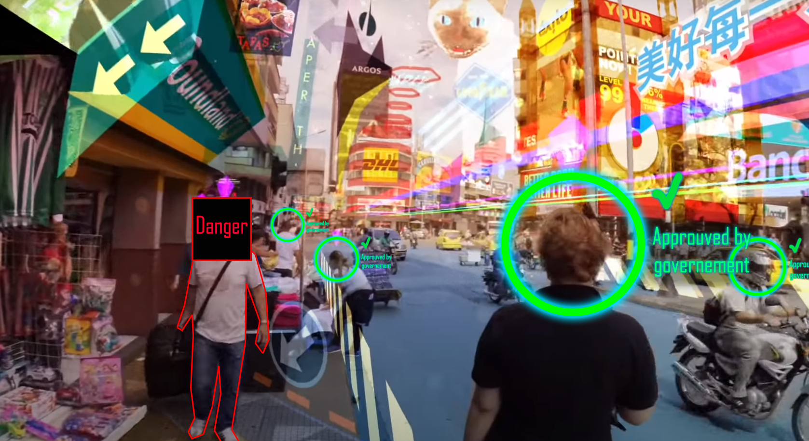

Hyper Article
In such a world, where mixed reality has become the only reality for the majority of the population, we could expect a lot of terrifying scenarios.
The main issue I could see is the power that is given to people who are controlling what is displayed. With such a powerful tool, it is incredibly easy to manipulate all the population as you wish. You could for example create restricted area where the image will become fuzzy if you go in, and you could also remove all sign of propestation against the technology itself. And you could even be able to remove the anti-virtual-reality peoples themselves. By adding a black square on their faces, and adding sound when they try to talk to you, you’re then totally unable to interact with them. Of course we could imagine that we can turn off the mixed-reality device, but then it will be so uncomfortable to remove all this everyday helps that you won’t do it for a long time (exactly the same with our smartphone today).
To avoid such a scenario, there is in fact two possibilities : not create this technology, or not have such a totalitarian regime. The first option seems really hard to achieve, if this technology is feasible, some people will do it. So the only option seems to be to stay aware of what happen in our life, avoid as mush as possible to be dependent on technology on which we do not have any control, and always ask ourself if we are in a real “democraty”, or if we are not falling in an “Hyper-reality” or in “The Best Picture” (the book by Aldous Huxley).

Another thing that scares me about such a technology, is the potential isolation in which the user can fall.
As we see today with smartphones, which can be a great tool to organize party with friends, it could also be a tool for a never-ending scroll on instagram with an impression of ‘sociability’. This could become even worse if the screen is not in your pocket but in superposition of the reality. Especially for young children, making the difference between a real human friend, and a 3D virtual friend could not be so easy. So we could expect a lot more of autistic and self-centered behaviour if we do not take care of how we use mixed and virtual reality.
This kind of issues could be mainly avoided if children do not growth into this fake reality. So the solution could be to teach parents that screens should not be in hands of children before a certain age.